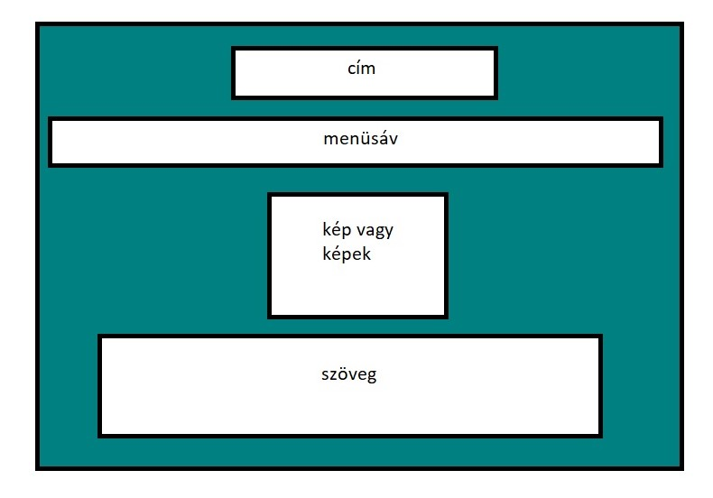

Bertók Dorottya
RÓLAM
KÉPEIM
KAPCSOLAT
EREDETI KONCEPCIÓ:

Számomra a html kódolása okozott nehézséget, de szerencsére az órai és az interneten talált anyagok megkönnyítették a dolgom. A megvalósítás közben pedig a képeken és azok elhelyezkedésén variáltam.
Felhasznált segédanyagok és honlapok:
https://www.w3schools.com/
https://www.tutorial.hu/
https://webfolio.hu/